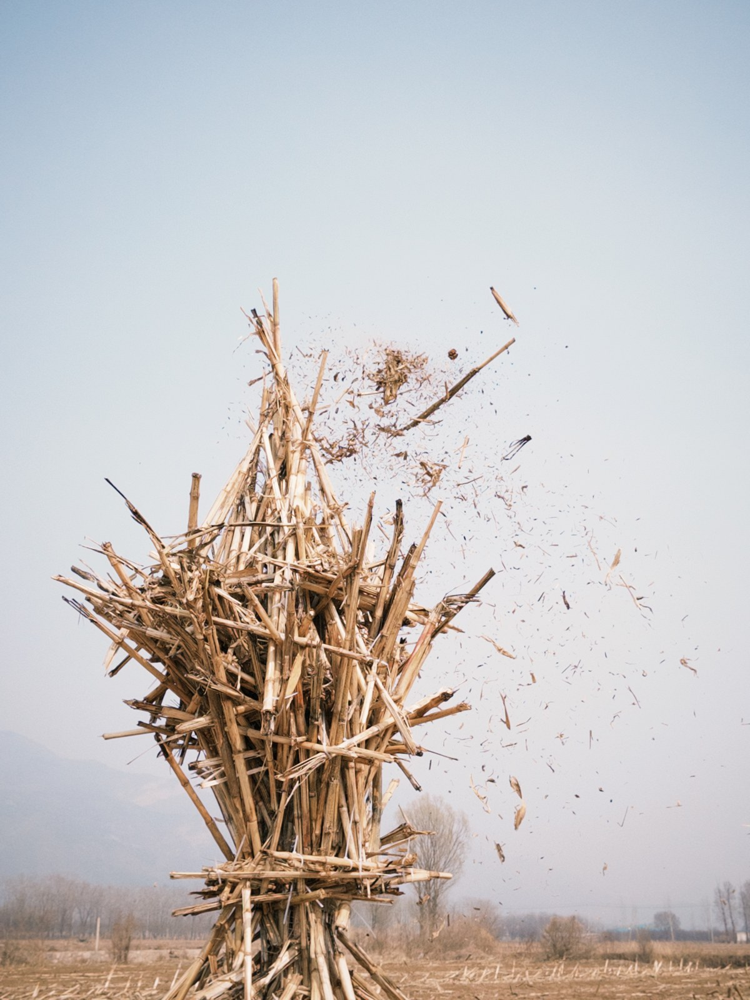
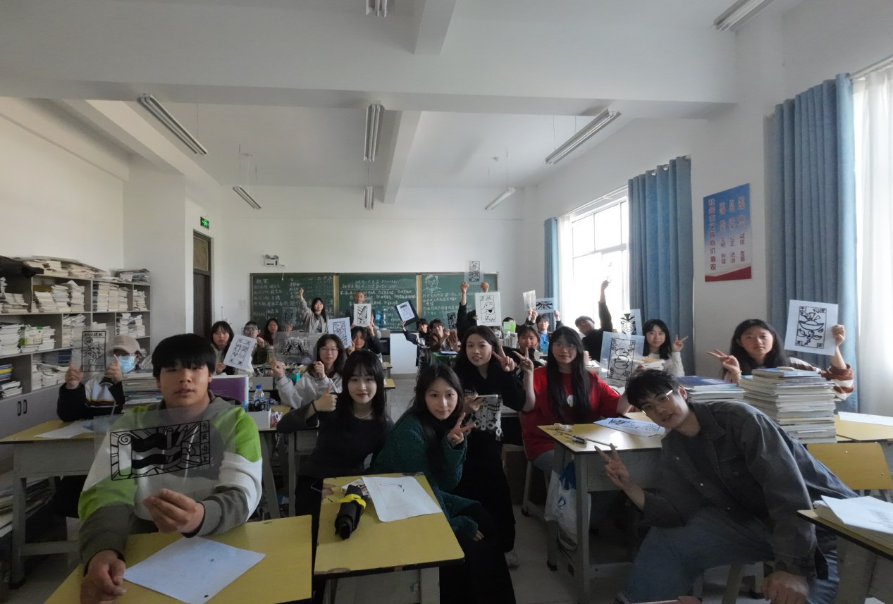
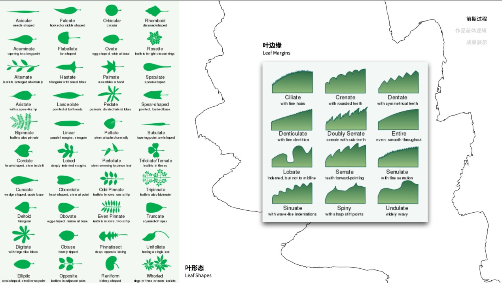
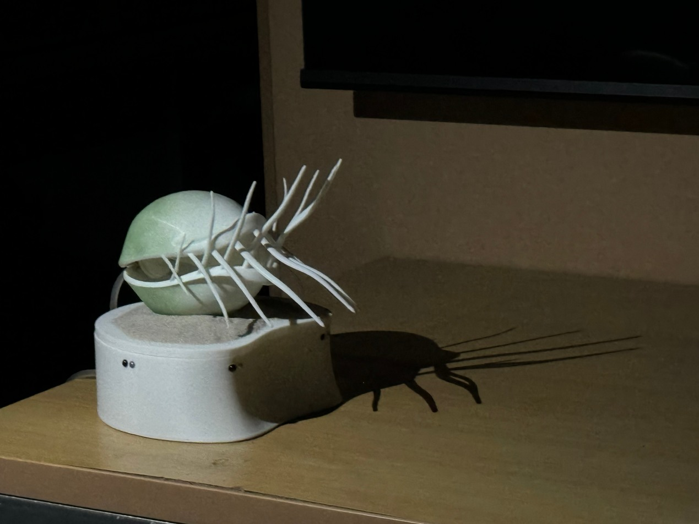
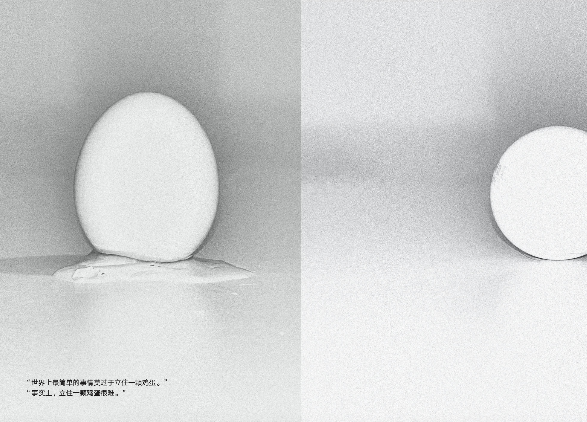
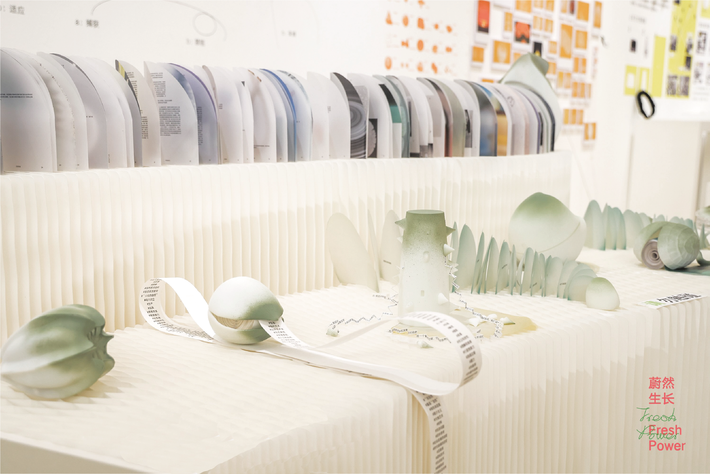

Selected work
Practice, in context.
Curriculum design, ecological art, community workshops, and visual inquiry.

The Plant Cup
Learning with living plants through embodied observation, material experimentation, and collective making.
Explore project
From Perception to Connection
Field-based learning with corn stalks, discarded stone, and the ecological relationships of a place.
Explore project
Bai Heritage, Contemporary Learning
Connecting local craft, personal experience, and contemporary design in Jianchuan, Yunnan.
Explore project
Learning from Plants
A visual exploration of cactus forms, perceived aggression, and the distance between appearance and interpretation.
Explore project
Visible Breathing
A plant-like form changes its movement in response to the presence of a viewer.
Explore project
Transplantation, Differentiation & Immunity: Four Strategies for Douyin’s Glocalization
A visual study of Douyin, media participation, and the relationship between global platforms and local cultures.
Explore project
Stand Up
How to make an egg stand? A photographic encyclopedia of everyday experiments and unexpected connections.
Explore project
The Seed Book
Bringing plant forms and book structures together to explore how we perceive our relationship with nature.
Explore project